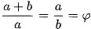
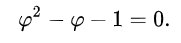
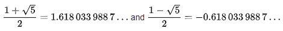
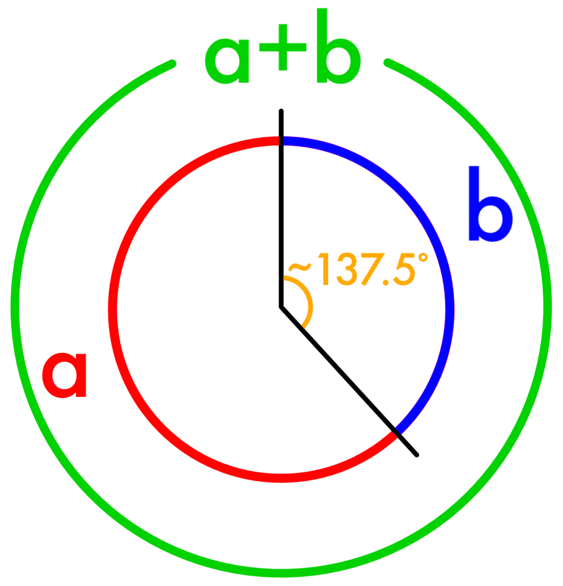

Let's go to the roots and find how it is derived

Two quantities a and b are said to be in golden ratio(
Φ
), if

Through simplifying the fraction and substituting in b/a = 1/φ
Therefore,
Multiplying by φ gives
Which can be rearranged to

Using the quadratic formula, two solutions are obtained:

Because φ is the ratio between positive quantities, φ is necessarily positive:
Now that we have seen the derivation of golden ratio, we'll see some more interesting facts about it!
*
Φ
is the only number whose square is greater than itself by one, expressed mathematically as
Φ² = Φ + 1 = 2.618.
* Φ
is also the only number whose reciprocal is less than itself by one, expressed as 1/
Φ = Φ – 1 = 0.618
* In geometry, the golden angle is the angle subtnded by the smaller (blue) arc when when two arcs that make up a circle are in golden ratio. That is, the ratio of length of smaller arc to the length of larger arc is same as the ratio of the length of the larger arc to the complete circumference of the circle. It measures approximately 137.50o or 2.39 radians.

Do you want to find out how the Fibonacci numbers converge with the Golden Ratio?
Slide above and
 Click here
to try your own example by entering the first two number of your own Fibonacci Sequence.
Click here
to try your own example by entering the first two number of your own Fibonacci Sequence.
| Actual Ratio | Percentage Convergence | Simple Ratio |
|---|---|---|
| 1.0000000000000000000000000 | 38.1966011250105097474261129 | 1 / 1 |
| 2.0000000000000000000000000 | 61.8033988749894902525738871 | 2 / 1 |
| 1.5000000000000000000000000 | 88.1966011250105168528534705 | 3 / 2 |
| 1.6666666666666667406815350 | 95.1367322083228117435282911 | 5 / 3 |
| 1.6000000000000000888178420 | 98.1966011250105168528534705 | 8 / 5 |
| 1.6250000000000000000000000 | 99.3033988749894831471465295 | 13 / 8 |
| 1.6153846153846154187760931 | 99.7350626634720498486785800 | 21 / 13 |
| 1.6190476190476190687661529 | 99.8986369702275851523154415 | 34 / 21 |
Note :
* Actual Ratio : The ratio of two consecutive numbers of the Fibonacci Sequence. Consider two consecutive numbers 'a' and 'b', then their Actual Ratio is a floating point ratio of b / a
* Percentage Convergence : It represents the percentage equivalence of Actual Ratio to the Golden Ratio.
Percentage Divergence =100 - (Δ x / x) * 100, where 'x' is the Actual Ratio
* Simple Ratio : The ratio of two consecutive numbers of the Fibonacci Sequence. Consider two consecutive numbers 'a' and 'b', then their Simple Ratio is represented as b / a
Here are some Cool facts about Golden Ratio
Check out
whether your favourite celebrity is in the list
| 1. Scarlett Johansson
Actual Ratio : 1.56 Convergence : 96.4% |
6. Kelly Brook
Actual Ratio : 1.742 Convergence : 92.9% |
|
2. Kim Kardashian
Actual Ratio : 1.558 Convergence : 96.3% |
7. Katy Perry
Actual Ratio : 1.489 Convergence : 92.0% |
|
3. Helen Mirren
Actual Ratio : 1.546 Convergence : 95.6% |
8. Cameron Diaz
Actual Ratio : 1.765 Convergence : 91.0% |
|
4. Marilyn Monroe
Actual Ratio : 1.7185 Convergence : 94.0% |
9. Elle Macpherson
Actual Ratio : 1.833 Convergence : 88.3% |
|
5. Rita Ora
Actual Ratio : 1.504 Convergence : 93.0% |
10. Salma Hayek
Actual Ratio : 1.838 Convergence : 88.0% |